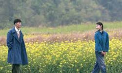
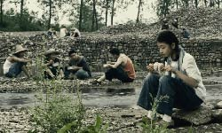
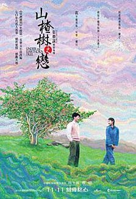
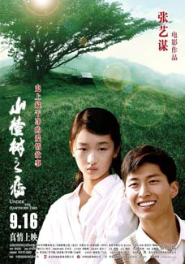
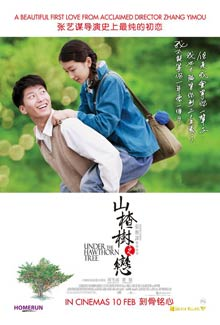
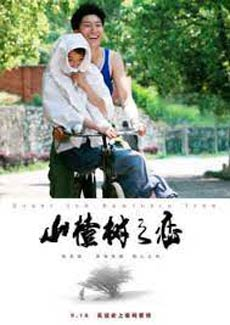
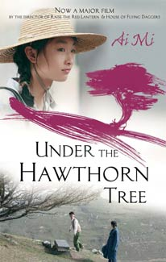
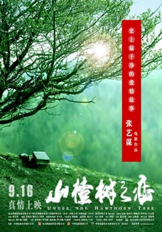

The film is an adaptation of the 2007 novel "Hawthorn Tree Forever" by Ai Mi, which was based on a true story set during the Cultural Revolution. The story revolves around the romance of Zhang Jing Qiu, a high school student who has come to the small village in Yichang City to be re-educated, since both his parents were deemed capitalists, and the geology student Lao San, whose mother committed suicide after being accused as rightist. The two of them fall in love almost immediately and their romance continues for the following year, with Lao eventually promising that he will wait for her to grow up. However, Zhang’s filial duties and a serious sickness have unexpected consequences for their relationship.

Zhang directs one of his simplest movies, with the strictly linear narrative being the highlight of this tendency. At the same time, quotations from Mi’s novel appear on screen, inducing the movie with a literary feel. The focus is on happiness, and the interaction with the collective good that usually leaves the former at a loss, with the film’s finale providing a heart-aching conclusion that justifies this concept. Visually, the movie is magnificent, with the attention to detail at a degree that induces even the simplest object with symbolism. At the same time, the use of light is elaborate, as it highlights the beauty of the surroundings, but also of Zhou Dongyu, who plays the role of Jing Qiu.




The film’s promotion tagline is "the cleanest romance in history". Indeed, Zhang’s touch is rarely so delicate in describing the pre-pubescent-looking Jingqiu’s perplexity and embarrassment toward Sun’s advances, as well as her naivety (she thinks sharing a bed is enough to cause pregnancy). In fact, a deep sexual undercurrent rippling under their blushing complexions - when she frolics with him in the pond, wearing the red swimsuit he gave her, when he bandages her feet, or when they lie down together in the hospital bed (his hand goes straight to where it counts). That is what lends the film its beauty.


